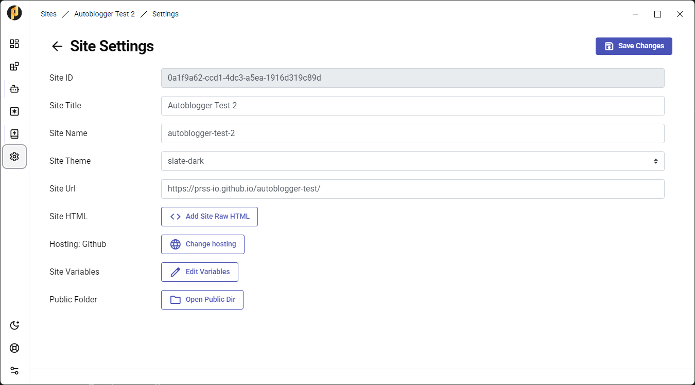
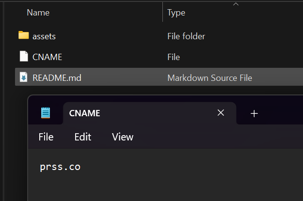
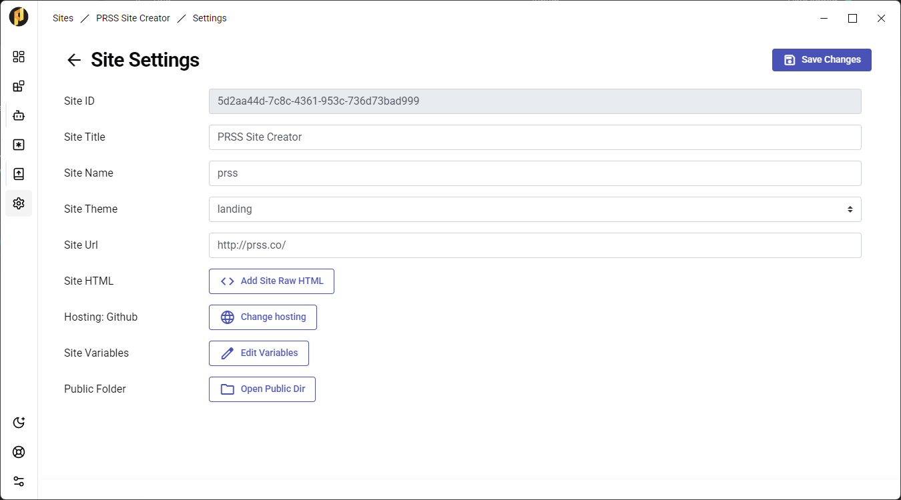

When you set up your website for publishing, you'll notice your website's URL looks something like this: https://my-github-account.github.io/my-site/
How to change this to something shorter like "prss.co"?
Make sure that you are configured for publishing. In Site Settings, the Hosting should be "Github" and the Site Url should be filled.
Otherwise, click the "Change Hosting" button next to the Hosting field and follow the instructions.
Once setup, click on the "Open Public Dir" Folder. A new folder should appear with your site's Public Directory.
If the folder does not appear, try changing your PRSS Data directory in App Settings (the last icon on the left sidebar) and try again.
In your Public Directory, create a file called "CNAME" (no extension) and, inside of it, add in the domain name.
Register your desired domain as entered in the CNAME file. Cloudflare is recommended.
In Cloudflare (or your registrar of choice), set up the DNS as shown in Step 5 of the GitHub guide for setting an Apex domain. Refer to the picture on the right as an example.
Go back to your Site Settings. The Site Url should reflect what's on your CNAME file, but as a full URL. For example: prss.co in CNAME would mean "https://prss.co/" as Site Url.
Go to one of your posts and Publish your site. Then go to the Publish Log. Click on the repository root (where your published files are hosted) and ensure that the "CNAME" file is there.
That's all. Your PRSS site should be available shortly on your custom domain!
- Note: If you encounter any issues, please reach out to support by clicking the "About & Help" button on the PRSS sidebar. Also, make sure to review the GitHub guide for setting an Apex domain. It can help spot some setup errors.